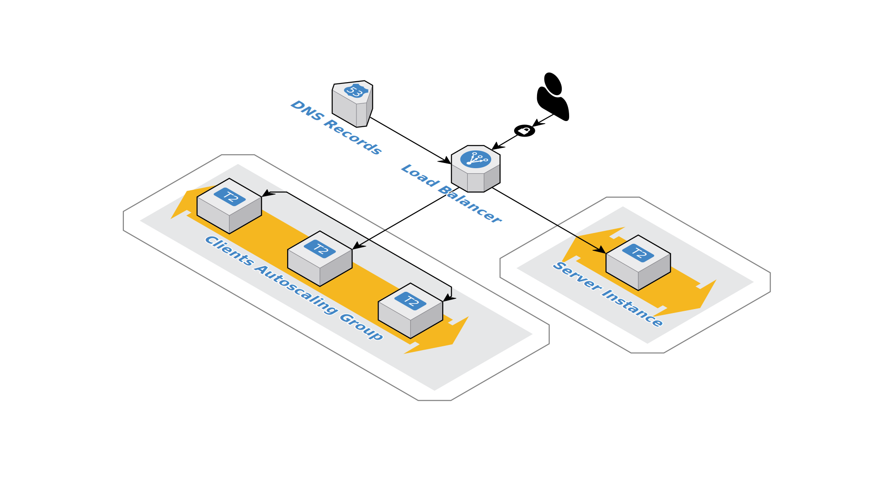

- Slides: terraform.gds-gov.tech
- Source code and demo code: github.com/lawliet89/terraform-talk
Problems with Managing Infrastructure (Manually)
Visibility
- Details are siloed in someone's head
- Changes are not visible
- Dependencies are hard to see
Difficulty
- Almost impossible to replicate
- Different APIs for different cloud providers
- Tedious and prone to errors
Infrastructure as Code
Provision, update, and manage your cloud infrastructure with code.Benefits
- Automated
- Version control with VCS like Git
- Replicate just by "copy/pasting" or changing variables
- "Just" read the code to figure out details
- "Just" read the code to figure out dependencies
- Abstraction and reusability
Terraform
- FOSS and paid versions
- Declarative configuration
- Single format across multiple providers
- Huge list of providers supported
Ansible/Chef/Puppet
- Configuration management that can also manage infrastructure
- More "procedural" form of provisioning
- Works well with Terraform — configure after Terraform provisions
CloudFormation/Heat
- Specific to the service
- Each service has its own syntax
Launching an EC2 Instance
- Create an EC2 Instance
- Create security group rule to allow SSH access
Provider
- Providers are plugins
provider "aws" {
version = "~> 1.33"
region = "${var.aws_region}"
}
variables
- Variables allows reusability.
- Define different variables for different "instances" or enrivonments
- Many ways to manage environment in Terraform.
- Provide values at run time with `varfiles`.
Security Group Rules
- Firewall rules for instances
- Use Interpolation to "refer" to other Terraform resources
- Creates implicit dependencies
- Terraform will figure out the rest
AMI
- Find image to launch instance
- Use `data` sources to refer to existing infrastructure
- No need to hardcode AMI
Instance
- Finally "deploy" the instance
- Interpolate other resources
Terraform Execution
- Desired state: Configuration files
- Actual state: AWS Infrastructure
- Known State: Terraform State
- Terraform figures out the dependencies and the steps required to create the resources.
Plan
Plan
An execution plan has been generated and is shown below.
Resource actions are indicated with the following symbols:
+ create
Terraform will perform the following actions:
+ aws_instance.instance
id: <computed>
ami: "ami-0238c4a6bd553d40a"
arn: <computed>
associate_public_ip_address: <computed>
availability_zone: <computed>
cpu_core_count: <computed>
cpu_threads_per_core: <computed>
ebs_block_device.#: <computed>
ephemeral_block_device.#: <computed>
get_password_data: "false"
instance_state: <computed>
instance_type: "t2.micro"
ipv6_address_count: <computed>
ipv6_addresses.#: <computed>
key_name: "terraform"
network_interface.#: <computed>
network_interface_id: <computed>
password_data: <computed>
placement_group: <computed>
primary_network_interface_id: <computed>
private_dns: <computed>
private_ip: <computed>
public_dns: <computed>
public_ip: <computed>
root_block_device.#: "1"
root_block_device.0.delete_on_termination: "true"
root_block_device.0.volume_id: <computed>
root_block_device.0.volume_size: "8"
root_block_device.0.volume_type: "gp2"
security_groups.#: <computed>
source_dest_check: "true"
subnet_id: "subnet-364a6551"
tags.%: "3"
tags.Name: "Terraform Demo"
tags.Terraform: "true"
tags.Usage: "Terraform Talk by Yong Wen"
tenancy: <computed>
volume_tags.%: "3"
volume_tags.Name: "Terraform Demo"
volume_tags.Terraform: "true"
volume_tags.Usage: "Terraform Talk by Yong Wen"
vpc_security_group_ids.#: <computed>
+ aws_security_group.instance
id: <computed>
arn: <computed>
description: "Managed by Terraform"
egress.#: <computed>
ingress.#: <computed>
name: "Terraform Demo"
owner_id: <computed>
revoke_rules_on_delete: "false"
tags.%: "3"
tags.Name: "Terraform Demo"
tags.Terraform: "true"
tags.Usage: "Terraform Talk by Yong Wen"
vpc_id: "vpc-dac9bcbd"
+ aws_security_group_rule.ssh_inbound
id: <computed>
cidr_blocks.#: "1"
cidr_blocks.0: "10.0.0.0/8"
from_port: "22"
protocol: "tcp"
security_group_id: "${aws_security_group.instance.id}"
self: "false"
source_security_group_id: <computed>
to_port: "22"
type: "ingress"
Plan: 3 to add, 0 to change, 0 to destroy.
Executing the Plan
Modify
- Plan will show the diff in what Terraform will do
- Some changes are destructive
- Some are "in-place"
An execution plan has been generated and is shown below.
Resource actions are indicated with the following symbols:
~ update in-place
-/+ destroy and then create replacement
Terraform will perform the following actions:
~ aws_instance.instance
tags.%: "3" => "4"
tags.Demo: "" => "true"
volume_tags.%: "3" => "4"
volume_tags.Demo: "" => "true"
~ aws_security_group.instance
tags.%: "3" => "4"
tags.Demo: "" => "true"
-/+ aws_security_group_rule.ssh_inbound (new resource required)
id: "sgrule-68829610" => <computed> (forces new resource)
cidr_blocks.#: "1" => "2" (forces new resource)
cidr_blocks.0: "10.0.0.0/8" => "10.0.0.0/8"
cidr_blocks.1: "" => "192.168.0.0/16" (forces new resource)
from_port: "22" => "22"
protocol: "tcp" => "tcp"
security_group_id: "sg-062b707aad99b2c9b" => "sg-062b707aad99b2c9b"
self: "false" => "false"
source_security_group_id: "" => <computed>
to_port: "22" => "22"
type: "ingress" => "ingress"
Plan: 1 to add, 2 to change, 1 to destroy.
Destroy!
- Easy to clean up and destroy
- (Also easy to re-create!)
- Reverse of create — Terraform calculates the dependencies and destroys them in reverse.
An execution plan has been generated and is shown below. Resource actions are indicated with the following symbols: - destroy Terraform will perform the following actions: - aws_instance.instance - aws_security_group.instance - aws_security_group_rule.ssh_inbound Plan: 0 to add, 0 to change, 3 to destroy. Do you really want to destroy all resources? Terraform will destroy all your managed infrastructure, as shown above. There is no undo. Only 'yes' will be accepted to confirm.
Demo
Application
- Silly Chatroom
- Stateless Static Javascript Client
- Stateful Server
Basic Idea
- Autoscaling Group (ASG) for clients and servers separately
- One Elastic Load Balancer (ELB) with different listener rules to target the ASG
Diagram
Hidden Details…
- Security groups rules between ELB and EC2 instances
- Launch configuration details for ASG
- Listener for ports
- Redirect HTTP ➡ HTTPS listner
- Certificate for HTTPS
- Listener rules to handle different host names
- Target groups for ASG
- Dependencies… which should I create first?
- …
Terraform Implementation
Source code at github.com/lawliet89/terraform-talk/tree/master/demoDependency Graph

terraform init
terraform plan
terraform apply
Changing and fixing terraform apply
Changing implementation details (diff)
It works!
chat.gahmen.tech
terraform destroy — Ω
Recreation — α
Code Walkthrough
Source code at github.com/lawliet89/terraform-talk/tree/master/demomain.tf
Required variables.tf
Optional variables.tf
Autoscaling Group
Launch Configuration
Security Group Rules
ELB
Listeners
Don't forget extra security rules!
Repeat for the server.
Route 53
The order we write this does not matter.
Bonus: Enable GuardDuty and AWS Config for all regions
Open Source Module
We will make use of an open source module to help us along.
- Slides: terraform.gds-gov.tech
- Source code and demo code: github.com/lawliet89/terraform-talk